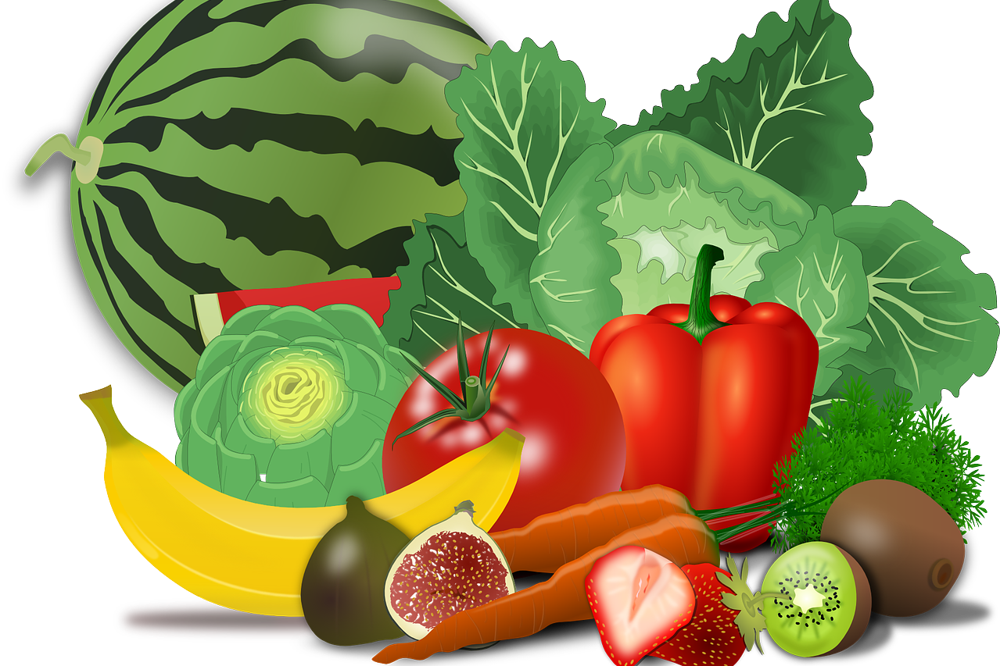
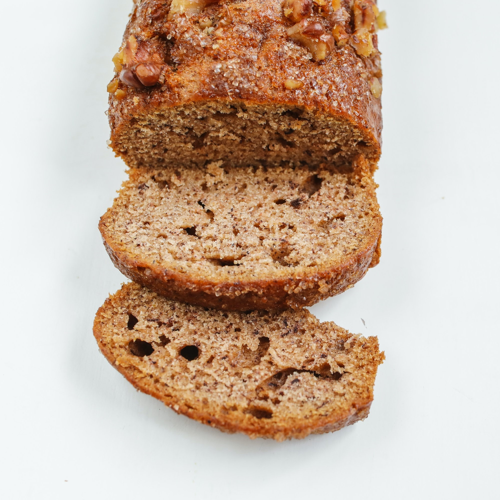
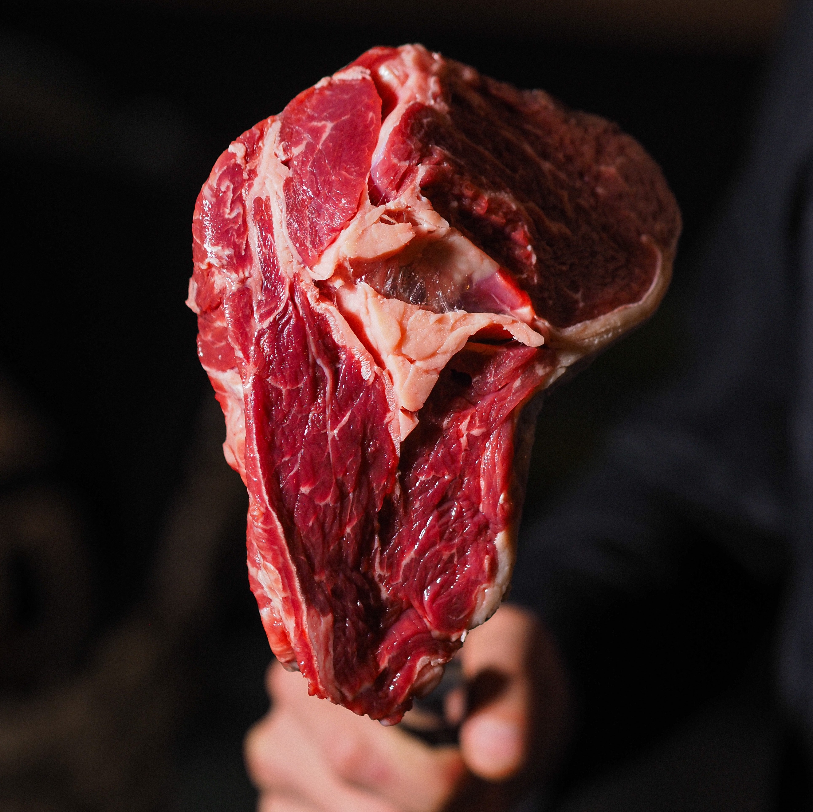

Things You Should Eat To Cure And To Prevent Cancer
Cancer is a disease that has a very bad effect on the general health of the patient. Not only this, due to the treatment of cancer, the diet of the patient also has a bad effect. The diet of many cancer patients is also reduced because the disease affects various organs of their digestive system such as the esophagus, stomach, small or large intestine, liver, gall bladder, or pancreas. For the treatment to be completely effective, some precautions must be taken in the diet. Moreover, as stated by various studies on the subject, very restrictive diets are to be considered good weapons against cancer.
Rather, the real issue is how tolerable are they by those under treatment, on the days that are certainly not easy when chemotherapy or immunotherapy is administered? This is a crucial question: cancer, together with cardiovascular diseases and diabetes, represents one of the main chronic conditions globally. The first step – as Assidai always remembers in the information to its members – is to prevent these pathologies with adequate lifestyles and nutrition . It is equally evident that, in the unfortunate hypothesis in which one is faced with the onset of a tumour, it becomes crucial to identify the most effective treatment techniques possible . Among these there could be a “ diet therapy” With a metabolic shock to be coupled with more classic treatments. In essence, it is about “starving cancer”: in the future, some researchers argue, to fight it, it will be necessary to combine standard therapies, such as immunotherapy or hormone therapy, with nutritional therapies in which the availability of nutrients is revolutionized both during and after therapy.
Tolerability, side effects and efficacy
Let’s now see in detail the results of the study that was conducted. The tested diet, hypoglycemic , provided for a very severe caloric restriction of five days, to be taken cyclically every three to four weeks during chemotherapy or immunotherapy, obviously under medical supervision. Numbers in hand, with about 400-600 calories on the first day and less than 400 calories the following, the diet consisted mainly of vegetables , oil , tea , fruit , nuts and, only once, wholemeal bread.
Three elements that have been thoroughly evaluated. First of all, the so-called tolerability, on which no particular problems have occurred. The study published in the specialist journal Cancer Discovery revealed that out of 101 patients undergoing diet therapy, only four went from normal weight to underweight, and not severely. Furthermore, 99% of patients managed to undergo at least one course of treatment and of these 76% underwent at least three. Second key point: the side effects. About four people complained of asthenia, i.e. fatigue, while another five suffered an episode of hypoglycaemia; other small adverse reactions such as nausea or feeling confused were also recorded. Last but not least, here is the thermos element of evaluation: what was the effectiveness of diet therapy in fighting the disease? The assumption of the study is that cancer cells take advantage of the high blood sugar level to develop. Therefore, reducing glucose as much as possible in the days of therapy is as if you hit the enemy on two fronts: with diet and with drugs. At the same time – the study revealed – the metabolic shock also had an effect on the immune system, where it reduces the number and activity of “bad” cells, which inhibit the immune response, and increases the amount of “good” ones. , potentially able to recognize and kill cancer cells. In essence , diet therapy helps to make the patient’s immune system more effective.
Which type of cancer is most effective?
In this case, the answer is still uncertain. The study in question mainly included patients with breast, colon, and lung cancer, but as they were subjects who volunteered, an accurate sampling could not be drawn up. New research, shortly, will also be able to investigate this aspect.
Nutrition during treatment: the advice of the Veronesi Foundation.
In any case, when performing cancer treatments, nutrition is a key element. To remember this is the Veronesi Foundation which underlines how the goal is to help prevent nausea and combat the side effects of therapy, represented above all by inflammation of the mucosa and vomiting. Two general tips are valid: you must chew very well and slowly and do not worry if after the therapy you feel nauseous and not feel hungry as your appetite will return within a few days.
What are the foods to be favored?
Maintaining a healthy diet plays an important role in preventing cancer. Although everyone should develop eating habits that will reduce the risk of cancer as they age, this is especially important for cancer survivors. Healthy eating habits can help reduce the risk of obesity and may reduce the risk of certain cancers occurring in adults.
Dietitians recommend eating a healthy diet, with a special emphasis on fruits, vegetables and whole grains. In addition, controlling calorie intake can help maintain a healthy weight.
Well-cooked whole grain cereals or durum wheat semolina pasta, preferably whole grain; creams of legumes or well-cooked legumes (choosing the peeled ones or using the vegetable mill); fish, preferably blue, due to the high content of omega-3 fats with anti-inflammatory action; seasonal vegetables; the bread of wheat flour.
What foods should be avoided instead?
Red meats and processed meats (cured meats, sausages); high-fat cheeses; cow milk; sugars and foods based on refined flours or other high glycaemic index starches, such as potatoes and corn; cereal fibres, especially if hardened by baking (wholemeal bread and pizza, raw foods.
Pay close attention to portion amounts and calories.
Tips for diet, weight, and physical activity:
Researchers have studied how certain types of foods, and portions of foods, can affect the development of cancer. There is evidence that certain substances in foods may slow cancer cell growth and protect against cancer:

Eating more calories than the body needs can lead to weight gain. Being overweight or obese increases the risk of several types of cancer, including:
Consumption of substances such as wine, beer and liquor increases the risk of cancer. Alcohol directly increases the risk of cancers in the head and neck, liver, esophagus, breast and colon and rectum.
While researchers don’t know exactly why alcohol increases the risk of cancer, possibilities include:
If adults drink alcohol, men should limit themselves to 2 drinks per day and women to 1 drink per day. One drink of beer is defined as 12 ounces, wine as 5 ounces, and 80-proof liquor (distilled alcohol) as 1.5 ounces.
Other suggestions for limiting alcohol use include:
Patients should ask the physician if it is safe to drink alcohol during illness or while taking certain medications.